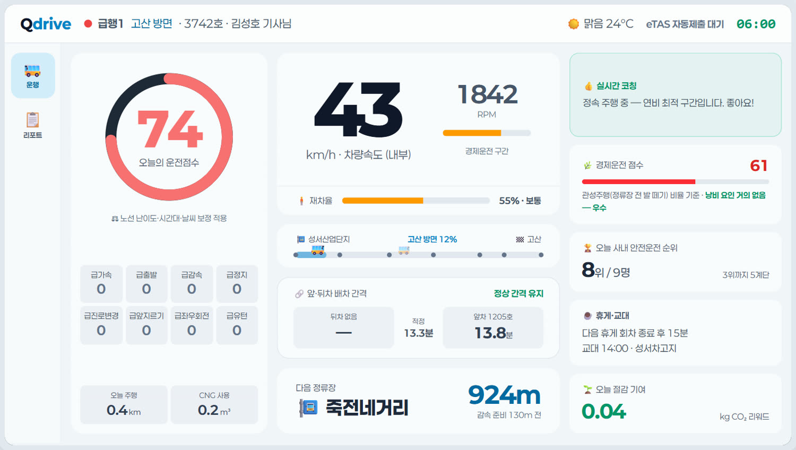
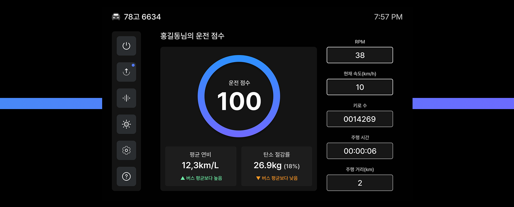

모빌리티 IP
블록체인 모빌리티 인포테인먼트 관제(2026) · 디지털 번호판 차량 통신 · 전기차 충방전 예약
모빌리티·탄소중립 플랫폼 — 차량 데이터가 서비스가 됩니다. 운행기록과 차량 진단 신호를 표준 형식으로 수집해 위험운전을 판정하고, 운수사 관제와 탄소 배출 산정·리포트까지 하나의 흐름으로 연결합니다.
운행기록과 차량 진단 신호를 표준 형식으로 수집합니다.
위험운전 판정부터 탄소 배출 산정까지 하나의 흐름으로 연결합니다.

Qdrive는 차량에서 운행기록과 진단 신호를 수집해 위험운전, 에너지 사용, 탄소 배출을 함께 관리하는 모빌리티 플랫폼입니다.


디지털 클러스터·
EV 충·
주행·

차량·
서로 다른 차량·
커넥티드 차량·
이기종 데이터를 공통 스키마·
주행·
클러스터 UI·

모빌리티·
OCPP는 EVCP에 적용했고, LTE Cat M1은 자체 통신 모듈 개발 경험을 보유합니다. ISO 15118과 GHG Protocol은 사업 요건에 따라 적용 범위를 정합니다.

| 서비스 축 | 입력 데이터 | 표준· | 산출물 |
|---|---|---|---|
| 차량 데이터 | 디지털 클러스터· | MQTT · LTE Cat M1 | 표준화 주행· |
| 에너지· | 충전 세션· | OCPP 연계 · ISO 15118 참조(사업별 적용) | 충· |
| 탄소중립 | 주행· | GHG Protocol · ISO 14064 참조(사업별 적용) | 산정 기준에 따른 탄소 저감량 리포트 |

Qdrive는 기존 오큐브 플랫폼·
차량 데이터 수집부터 판정·
블록체인 모빌리티 인포테인먼트 관제(2026) · 디지털 번호판 차량 통신 · 전기차 충방전 예약
글로벌 완성차 양산 IVI·
위험운전 판정·
기존 DTG·